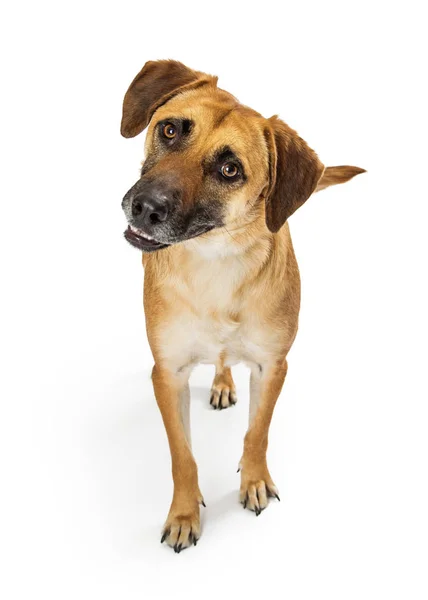

Tudo sobre os Vira Latas

O vira-lata (ou SRD - Sem Raça Definida) é o cachorro mais popular
e amado do Brasil! Eles são o resultado da mistura de várias raças ao
longo das gerações, o que faz com que cada um seja
absolutamente
único em sua aparência, cor e tamanho. Não existem dois vira-latas
no mundo!